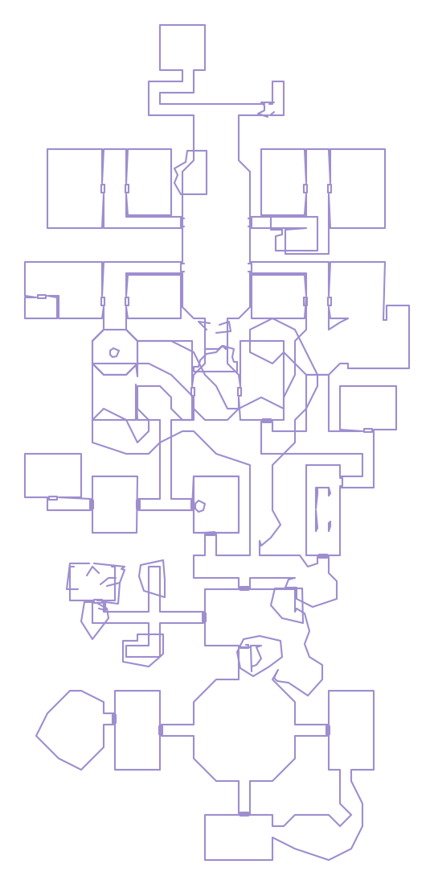

EQL Source / The Index / Named mob
Boondin Babbinsbort
- Level
- 25
- Race and class
- GNOME · NEC
- Position
- −814, −206
- Zone
- Befallen
- Notes
- Hits for 52 max, has a pet, self-buffs on spawn with Leatherskin and a haunting line. A mini-boss.

Floor from the game’s own mesh